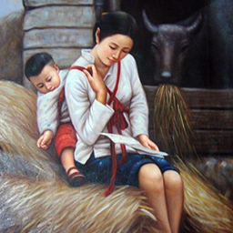
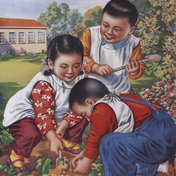
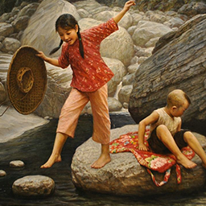
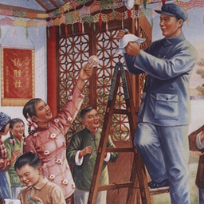
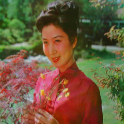

-

出生
这一代的父母多出生于上世纪五、六十年代，这时候的中国正处于农业社会为主，向工业社会转型的特殊时期
-

成长
这一代的父母成长于信息相对封闭的环境，很难接触到国外的思想或观念
-

教育
这一代的父母接受的教育相对并不完善也并不健全，他们中只有少数接受过高等教育
-

经历
这一代的父母大多当过知青，有过上山下乡的经历，且他们中的一些人，由于缺乏感情经验，在农村结婚后就留在了农村，很难回到城市里
-

结婚
这一代父母多秉持传统的婚姻观念，且对于“父母之命，媒妁之言”也相对较能接受